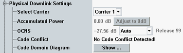

The first parameters are general settings. If a multi-carrier scenario is active, they are available per carrier.

Selects the carrier for which the physical downlink settings are displayed.
This parameter is only visible while a multi-carrier scenario is active.
Remote command:None - the carrier is selected via suffix setting in a particular remote command.
Displays the total power of all physical downlink channels active during a call (state connected). Deactivated channels and channels that are not active during the call (AICH, S-CCPCH) are not considered for the calculation of the accumulated power. HSPA channels are only considered if they are relevant for the currently configured connection type.
The power is indicated relative to the base level of the generator (see "Output Power (Ior)"). The information is carrier-specific.
The button "Adjust to 0 dB" corrects the power levels of all enabled channels of a carrier. It minimizes the difference between the total power level of the channels and the base level of the carrier. For this purpose, the level of all enabled channels of the carrier is decreased by the same amount. As the levels are modified in steps of 0.1 dB, this procedure possibly yields a small remaining accumulated power instead of 0 dB.
If a multi-carrier scenario is active, the button triggers the correction of all carriers.
Remote command:Displays the total OCNS channel power relative to the base level of the generator (see "Output Power (Ior)").
The OCNS channels are present if the total power of all active physical downlink channels is smaller than the base level of the generator. The remaining power is then assigned to the OCNS channels so that the base level is reached.
Four sets of OCNS channels are available: Release 99, 5, 6 and 7.
If you select "Auto", a suitable set is selected automatically depending on the current configuration. For carrier 2, the automatic mode always selects release 6.
The OCNS channels can be configured per carrier.
See also "Orthogonal Channel Noise Simulator (OCNS)"
Remote command:Displays whether a code conflict is detected or not. Also a red box is displayed next to the conflicting channels.
Conflicts are not corrected automatically. It is even possible to generate a signal using conflicting codes.
For background information, see "Channelization Codes"
Remote command:Shows or hides the code domain diagram. For a description, see "Code Domain Diagram".